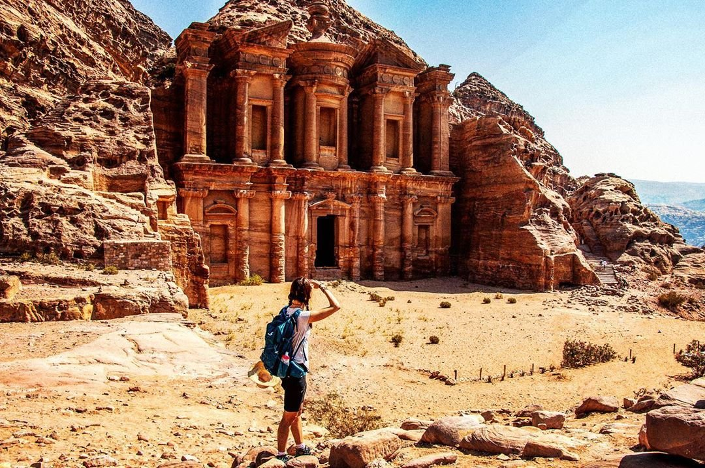

The ancient city of Petra is one of Jordan’s national treasures and by far its best-known tourist attraction. Petra is the legacy of the Nabataeans, an industrious Arab people who settled in southern Jordan more than 2,000 years ago. Petra is a UNESCO World Heritages Site and one of the new Seven Wonders of the World. Inhabited by the Nabateans, Edomites and Romans, Petra brought together the knowledge and skill of these civilizations to create this world wonder.
There is a lot of thing to discover in Petra such as:
- The Treasury (Al Khazna)
- AMMARIN BEDOUIN CAMP
- AL-SIQ TO TREASURY TRAIL
- AD-DEIR MAIN TRAIL
Best Hotels in Petra:
- Petra Guest House Hotel
-Located main Entrance of PETRA, 71810 Wadi Musa, Jordan
-Quiet street view /Mountain view/ City view/ Garden view - Petra Marriott Hotel
- the hotel is 2.3 km from Petra, 1.9 km from Obelisk Tomb and 2.2 km from College of Archaeology.
-Mountain view - Infinity Lodge
-the hotel is 2.3 km from Petra 2.9 km from College of Archaeology
-Mountain view/ Inner courtyard view - Seven Wonders Luxury Camp
-Located in Petra, 8 km from Petra Visitors Centre.
-Mountain view/ Garden view
